DevOps
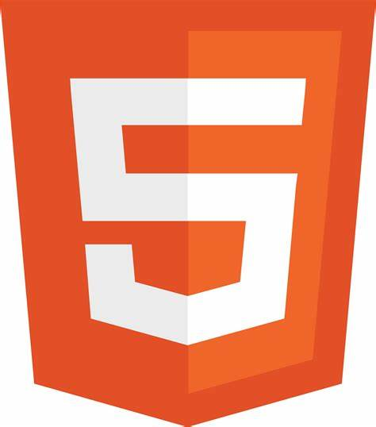
 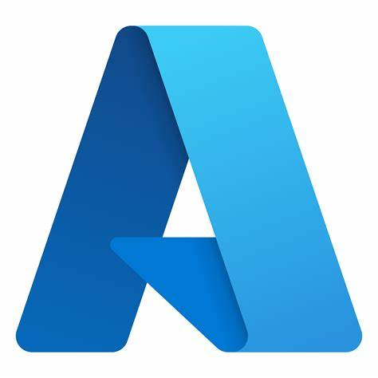
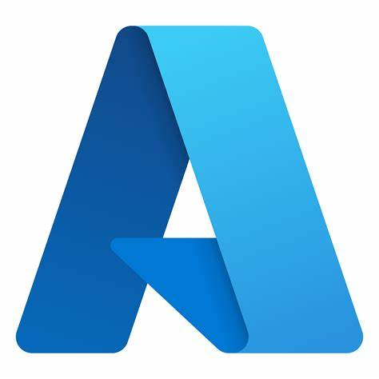
 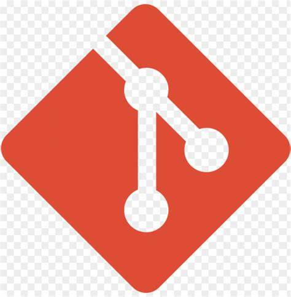
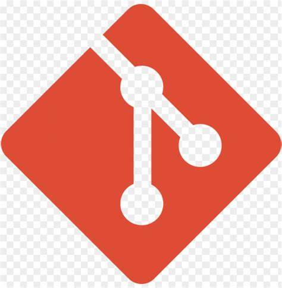
 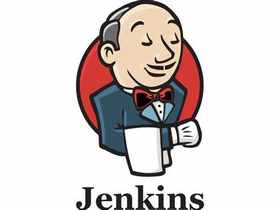
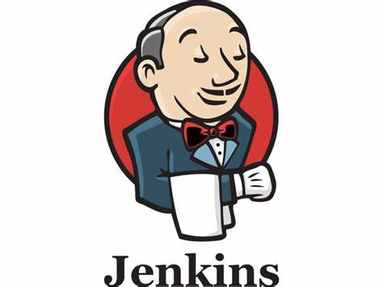
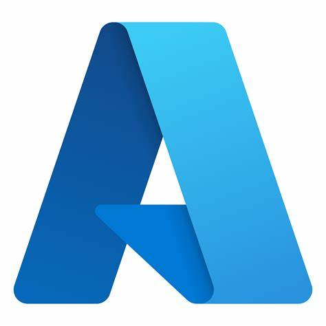
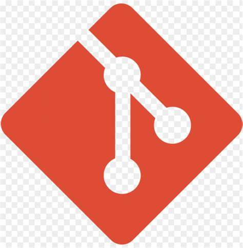
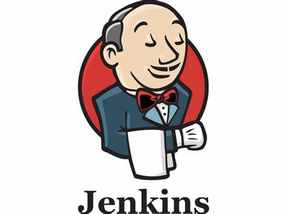
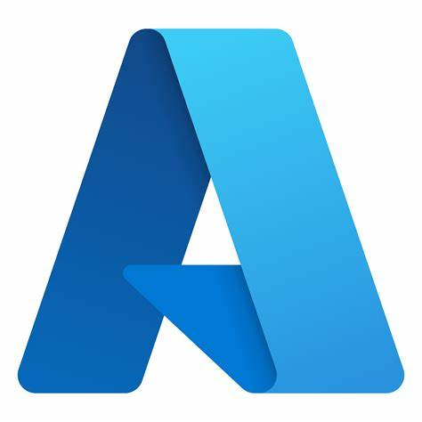
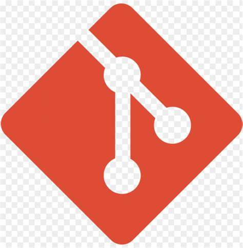
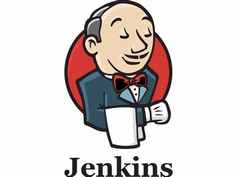
Soy Luis Díaz, un apasionado por la tecnología y la ciencia ficción. Actualmente me encuentro ampliando mis conocimientos en desarrollo e implementación web. Estudio tecnologías como HTML, CSS, JavaScripty Python. También tengo conocimientos básicos sobre DevOps. Sigo en constante aprendizaje sobre las diferentes herramientas y tecnologías más utilizadas en el rubro tales como: Azure, AWS, bash scripting, Git, Docker, Kubernetes e IA. Mi principal objetivo es lograr consolidarme como un experto en DevOps y explotar mis conocimientos para el bien común.